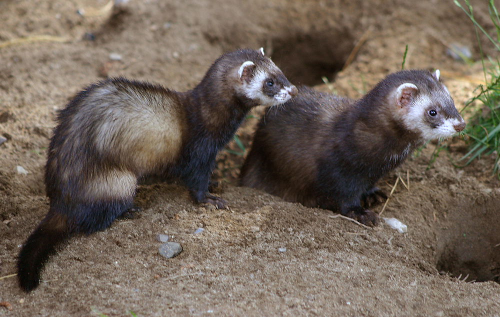
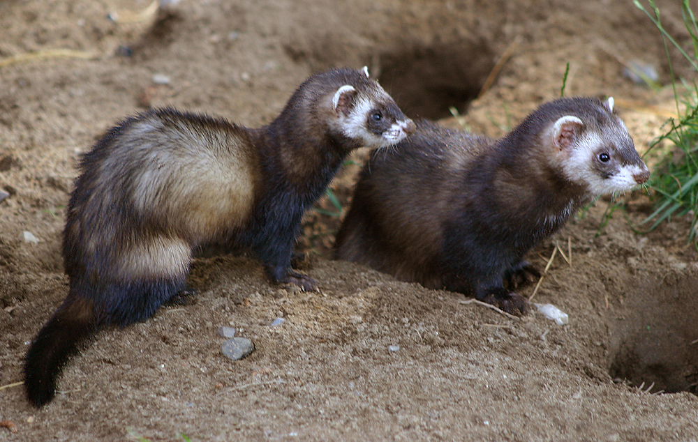

Червона книга України |
Охороняй! |
|
Меню
 

|
Таксономічна належність: Клас — Ссавці (Mammalia), ряд — Хижі (Carnivora), родина — Куницеві (Mustelidae). Один з 20-ти видів роду; один з 6-ти видів роду в фауні України. Природоохоронний статус виду: Неоцінений. Ареал виду і його поширення в україні: Майже вся Європа, окрім пн. частини Скандинавського п-ва, значної частини Англії, Ірландії та Балканського п-ва. В Росії зона європейських лісів. Пн. межа ареалу виду проходить посередині Карелії до Архангельська, на сх. до пн. районів Волгоградської обл. В Україні зустрічається повсюдно, крім АР Крим. Чисельність і причини її зміни: На сх. України зустрічається частіше за перегузню, в Пн.-Зх. Причорномор`ї — рідкісний вид, в Центральній Україні реєструється спорадично. На заплавних територіях Середнього Дніпра в 2002–06 рр. обліковано не більш 2 особин на о-в. Щільність населення виду тут склала лише 1,4–1,7 особин на 100 га. Змiни чисельностi: в 1930-х рр. заготівля шкурок в Україні була рівні 120 тис. на рік, в 1960-х рр. становила 2–3 тис. Зниження чисельності продовжується і зараз. Причиною зниження чисельності слід вважати як безпосереднє винищення, так і зменшення трофічної бази. Особливості біології та наукове значення: Осілий вид. В природних біотопах може рити нори, поселятися в норах інших тварин, використовувати пустоти серед скель, каміння та коріння дерев, купи хмизу, дуплисті пеньки, скирти. Вид з чітко вираженим синантропізмом. В населених пунктах поселяється в присадибних спорудах, на горищах жилих будівель, в купах дров, стодолах. Живиться дрібними ссавцями, птахами. Полює на земноводних, плазунів, при нагоді поїдає рибу, рослинний корм. Може запасати корм. Найбільш типові біотопи — заплава з заливними луками, заростями чагарників та острівного типу деревною рослинністю в долинах річок, плавні. Статевої зрілості досягає у 10–11-місячному віці. Гін і парування відбуваються, в основному, у лютому–квітні. Вагітність 40–42 дні, малята народжуються в травні–червні, зрідка в серпні. Виплод: 2–11, частіше 4–8 малят. Восени сімейні групи розпадаються, і тварини займають індивідуальні ділянки. Зустрічається у відкритих біотопах з заростями чагарників, в берегових урвищах, ярах, острівних і байрачних лісах, садах, парках, в агроценозах поблизу населених пунктів, в лісосмугах. Уникає суцільних лісів. Морфологічні ознаки: Приземистий невеликий звір з витягнутим і гнучким тулубом, короткими лапами і довгими гострими кігтями. Довжина тіла — 36–48 см, хвіст короткий, 8,5–17 см, маса — від 1 до 1,7 кг. Живіт, ноги, груди, горло і хвіст чорнобурі. На голові чорна«маска». Режим збереження популяцій та заходи з охорони: Занесений до Червоного списку МСОП, і ІІІ додатку до Бернської конвенції. Спеціально не охороняється. Розмноження та розведення у спеціально створених умовах: Добре звикає до неволі, проте в Україні не розводять. Господарське та комерційне значення: Мисливський вид. |


Вигаданий текст |
(с) Я |
|